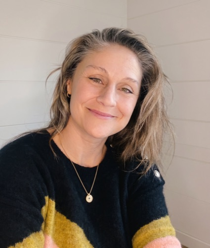
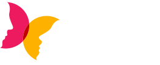
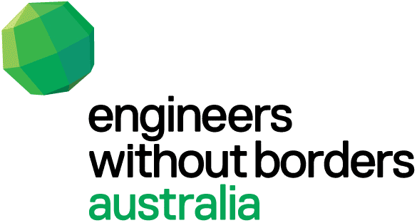
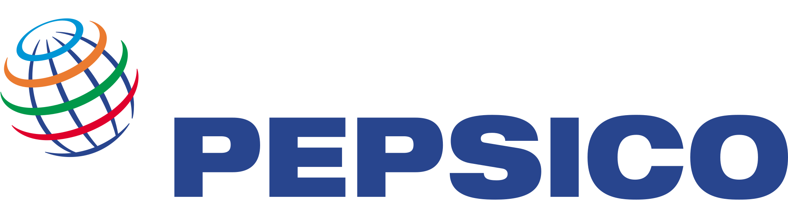
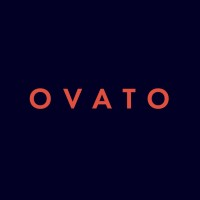
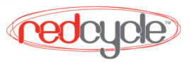

About
I'm Victoria Sharp. I translate complex ideas into stories people understand.
Flux & Flow is my studio. I work with communications teams in government, research and technology who have something important to explain, and an audience with every reason to scroll past.

I started in advertising and television post-production in London and Sydney, where you have seconds to earn attention.
In 2011 I set up my own studio. Since then I have led projects for NSW Government departments, energy companies and not-for-profits, from first concept to final delivery.
Most recently I was Senior Designer at Manawatū District Council, working inside the communications team. That is where I learned what public sector communication takes: plain language, accessibility, long sign-off chains, and deadlines set by statute.
Commercial work taught me to make people watch. Public work taught me to make it clear. Your message needs both.
You work with me, start to finish.
I am a sole operator by choice. The person you brief is the person who makes the work, so decisions are faster and your budget goes into the work, not the overheads.
I take on a small number of projects at a time. If your timeline does not fit, I will tell you in the first conversation. When a project needs a specialist, such as a voice artist, sound designer or translator, I bring in people I trust and tell you who they are up front.
Selected clients
Organisations I've worked with








